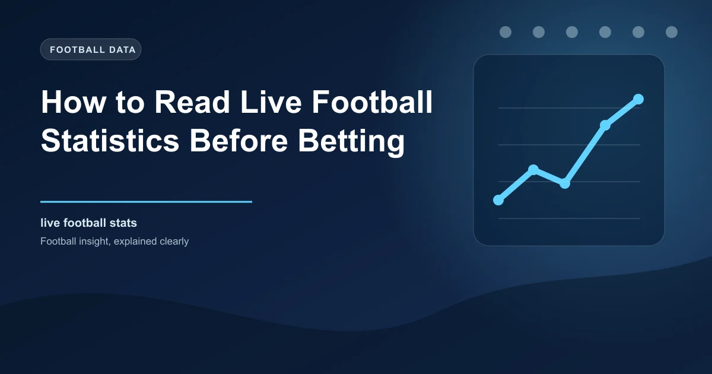

In-play betting is one of the fastest-growing segments in football wagering. Unlike pre-match betting, where you have hours or days to research, live betting demands quick decisions based on real-time information. The difference between profitable and unprofitable in-play bettors often comes down to one skill: the ability to read and interpret live match statistics accurately.
A live stats screen shows you dozens of numbers updating in real time. Possession percentages, shot counts, dangerous attacks, corners, fouls, and more flash across your screen. But knowing which numbers matter, how to interpret them in context, and when to act is what separates informed bettors from those who are simply guessing.
This guide teaches you how to read every key live statistic, understand what it tells you about the match, and combine multiple data points to make informed in-play betting decisions.
Possession is the most visible live statistic, but it is also the most misunderstood. A team with 65% possession is not necessarily playing better than a team with 35%. Possession only tells you who has the ball, not what they are doing with it.
Possession becomes meaningful when it reveals a team's tactical intent. If a team that normally has 55% possession suddenly has 70%, something has changed. They may have shifted to a more attacking approach, or the opponent may have dropped deeper to defend. Either way, the possession shift tells you about the tactical dynamic of the match.
High possession with low attacking output is common. A team can pass the ball harmlessly across their back line without creating chances. Look for the relationship between possession and other attacking metrics. If a team has 65% possession but only 2 shots on target, their dominance is superficial. If they have 65% possession and 8 shots on target with 3 big chances, their dominance is genuine.
For in-play betting, the key possession signal is the trend, not the absolute number. A team whose possession is climbing from 45% to 55% to 60% over successive 15-minute periods is taking control of the match. A team whose possession is dropping from 60% to 50% to 40% is losing their grip.
The distinction between total shots and shots on target is one of the most important in live statistics. Total shots tells you how many attempts a team has made. Shots on target tells you how many of those attempts tested the goalkeeper.
A team with 8 total shots and 6 shots on target is creating high-quality chances. A team with 8 total shots and only 1 on target is shooting from poor positions or under heavy pressure. The shot-on-target percentage tells you about shot quality.
For in-play decisions, focus on these shot metrics:
Dangerous attacks is a statistic that measures how many times a team has entered the opponent's final third with the ball in a threatening position. It captures attacking intent and territorial dominance better than possession alone.
A high dangerous attacks number with low shots on target suggests a team is getting into good positions but failing to convert those positions into genuine chances. This could indicate that the final ball is lacking, or that the defence is recovering well at the last moment.
A high dangerous attacks number with high shots on target indicates a team is genuinely threatening. This combination is one of the strongest indicators of an impending goal.
Final third entries are similar to dangerous attacks but measure a broader category. A team making frequent final third entries is dominating territory and putting sustained pressure on the opponent. Even without immediate goals, this pressure typically translates to goals over time because defences cannot maintain concentration indefinitely.
Live xG data is the most sophisticated tool available for in-play bettors. While most basic stats show you what has happened, live xG shows you the quality of chances that have been created. This makes it the best predictor of what is likely to happen next.
Live xG updates with every shot, assigning a probability value based on the shot's location, angle, type, and the situation. A penalty carries an xG of approximately 0.76. A header from inside the six-yard box might carry an xG of 0.60. A long-range shot from 25 yards might carry an xG of 0.03.
Compare the live xG of each team. If Team A has 1.8 xG and Team B has 0.3 xG at the 60th minute, Team A has been far more dangerous and is statistically the more likely team to score next. If the match is still 0-0 despite a 1.8 to 0.3 xG difference, Team A is underperforming and a goal could be overdue.
Live xG also helps you identify value in the Over and Under markets. If the combined live xG at the 55th minute is already above 2.0, the match is on track for Over 2.5 goals. If the combined xG is only 0.6 at the 55th minute, Over 2.5 looks unlikely unless the dynamic changes significantly.
Track how xG changes over 15-minute intervals. A team that accumulates 0.8 xG in the first 15 minutes, 0.6 in the next 15, and 0.5 in the next 15 is creating consistent chances. A team that accumulates 0.1 xG in the first 30 minutes and then 0.9 in the next 15 minutes is building momentum. Both patterns tell you something different about how the match is evolving.
Momentum in football is the shift in dominance from one team to another. While it is difficult to quantify precisely, several live statistics serve as reliable momentum indicators.
When a team increases their pressing intensity, closing down the opponent faster and winning the ball higher up the pitch, it signals a momentum shift. This is often visible in live stats as a sudden increase in possession in the opponent's half, more dangerous attacks, and higher shot volumes.
Watch for these pressing signals in live data:
Substitutions are one of the clearest momentum signals in live football. When a team makes an attacking substitution, it usually signals their intent to push for a goal. The momentum often shifts immediately as the fresh player brings energy and a different skill set.
Track when substitutions are made and how the stats change in the 10 minutes following each substitution. A team that brings on a striker and immediately increases their shots on target and dangerous attacks is making a genuine push. A defensive substitution signals the opposite intent.
Pressing intensity measures how aggressively a team defends without the ball. High pressing teams close down opponents quickly, force turnovers in dangerous areas, and create chances from defensive actions. Low pressing teams sit deeper, allow opponents more time on the ball, and look to defend as a compact unit.
In live stats, pressing intensity is often visible through:
For in-play betting, high pressing intensity creates a chaotic, open match that produces more chances and goals. Low pressing intensity creates a structured, controlled match that may produce fewer goals. Match the pressing profiles of both teams to predict the match dynamic.
Territory stats tell you where the ball is being played on the pitch. A team that spends most of the match in the opponent's half is dominating territory, even if they do not have high possession numbers.
Key territory stats to watch:
Territory dominance without goals creates building pressure. The longer a team dominates territory without scoring, the more likely a goal becomes because sustained pressure eventually breaks down defences. Conversely, a team that is pinned back in their own half but not conceding is absorbing pressure and may look to counter-attack effectively.
No single live statistic tells the whole story. The most successful in-play bettors combine multiple data points to build a complete picture of the match. Here is a framework for combining live statistics:
Even with a solid framework, live statistics can be misleading in certain situations. Watch out for these traps:
Developing a consistent routine for reading live stats improves your in-play betting decisions over time. Here is a recommended approach:
The most profitable in-play bettors do not bet on every match. They wait for the specific situation where the live stats align with their pre-match analysis and the odds offer value. Discipline is more important than volume. If the live stats do not support a clear decision, do not bet. The best in-play bet is often no bet at all.
Reading live football statistics is a skill that separates informed in-play bettors from those who rely on gut feeling. By understanding what each statistic tells you, how to interpret trends rather than snapshots, and how to combine multiple data points, you can make better in-play betting decisions.
Start with the basics: track possession trends, shot quality, and live xG. As you gain experience, incorporate more advanced metrics like PPDA, field tilt, and dangerous attacks. Over time, you will develop an instinct for when the live stats support a bet and when they do not. That instinct, backed by data, is the foundation of profitable in-play betting.
Check our free daily football predictions to apply these strategies.
Generate optimized accumulator combinations from today's AI-powered predictions. Set your target odds and get instant ticket suggestions.
Pro Ticket Builder →